CS180: Introduction to Computer Vision and Computational Photography
This project explores image filtering and spatial frequencies through convolution, edge detection, image sharpening, hybrid images, Gaussian and Laplacian stacks, and multiresolution blending.
In this project, I explored how spatial filtering and frequency decomposition can be used to analyze and manipulate images. I began by implementing 2D convolution from scratch and using finite-difference filters for edge detection. I then introduced Gaussian filtering to reduce high-frequency noise and constructed Derivative of Gaussian filters.
In the second half of the project, I used frequency-based ideas for image sharpening, hybrid images, and multiresolution blending. These applications all rely on the same underlying observation: different visual structures occupy different spatial-frequency ranges. Fine texture and sharp boundaries are primarily represented by high frequencies, while large-scale shapes and gradual intensity changes are represented by low frequencies.
I implemented convolution in two forms. The four-loop implementation iterates over output pixels with two inner loops over kernel entries. The two-loop implementation still iterates over output pixels, but NumPy performs the local patch multiplication and summation in optimized compiled code. In both cases, I explicitly flipped the kernel in both dimensions because this is convolution rather than correlation. Both implementations used constant zero padding and preserved the input image size, which corresponds to a same-size output.
def convolve_four_loops(image, kernel):
image = image.astype(np.float32)
kernel = kernel.astype(np.float32)
kernel = np.flip(kernel, axis=(0, 1))
image_height, image_width = image.shape
kernel_height, kernel_width = kernel.shape
pad_y = kernel_height // 2
pad_x = kernel_width // 2
padded_image = np.pad(
image,
((pad_y, pad_y), (pad_x, pad_x)),
mode="constant",
constant_values=0
)
output = np.zeros_like(image, dtype=np.float32)
for y in range(image_height):
for x in range(image_width):
for ky in range(kernel_height):
for kx in range(kernel_width):
output[y, x] += (padded_image[y + ky, x + kx] * kernel[ky, kx])
return outputdef convolve_two_loops(image, kernel):
image = image.astype(np.float32)
kernel = kernel.astype(np.float32)
kernel = np.flip(kernel, axis=(0, 1))
image_height, image_width = image.shape
kernel_height, kernel_width = kernel.shape
pad_y = kernel_height // 2
pad_x = kernel_width // 2
padded_image = np.pad(
image,
((pad_y, pad_y), (pad_x, pad_x)),
mode="constant",
constant_values=0
)
output = np.zeros_like(image, dtype=np.float32)
for y in range(image_height):
for x in range(image_width):
region = padded_image[
y : y + kernel_height,
x : x + kernel_width
]
output[y, x] = np.sum(region * kernel)
return outputI verified my custom results against SciPy's scipy.signal.convolve2d. The measured runtimes were approximately:
| Method | Runtime |
|---|---|
| Four-loop implementation | 3.5960 s |
| Two-loop implementation | 0.7412 s |
| scipy.signal.convolve2d | 0.0132 s |
The four-loop version is slow because multiplication and accumulation happen in Python loops. The two-loop version is substantially faster because NumPy processes each extracted patch in optimized compiled code. SciPy is much faster because the convolution routine itself is heavily optimized.
My custom convolution functions also used constant zero padding. This preserves the image dimensions and allows valid convolution near the edges, but it implicitly treats pixels outside the image as zero, which can introduce artificial boundary responses around the border.
box_filter = np.ones((9, 9), dtype=np.float32) / 81.0
box_filtered = convolve_four_loops(gray_image, box_filter)The coefficients sum to 1, so this box filter computes a local neighborhood average without intentionally changing the DC brightness of a constant region. It suppresses fine-scale detail and makes the image visibly smoother.
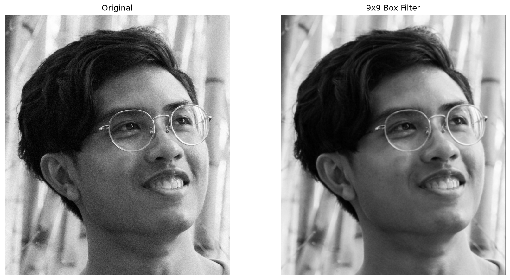
Dx = np.array([[1, 0, -1]], dtype=np.float32)
Dy = np.array([[1], [0], [-1]], dtype=np.float32)
dx_image = convolve_four_loops(gray_image, Dx)
dy_image = convolve_four_loops(gray_image, Dy)Dx and Dy respond to intensity changes in different directions and therefore highlight different edge orientations. For my portrait they reveal strong transitions along horizontal and vertical structures in different parts of the image.
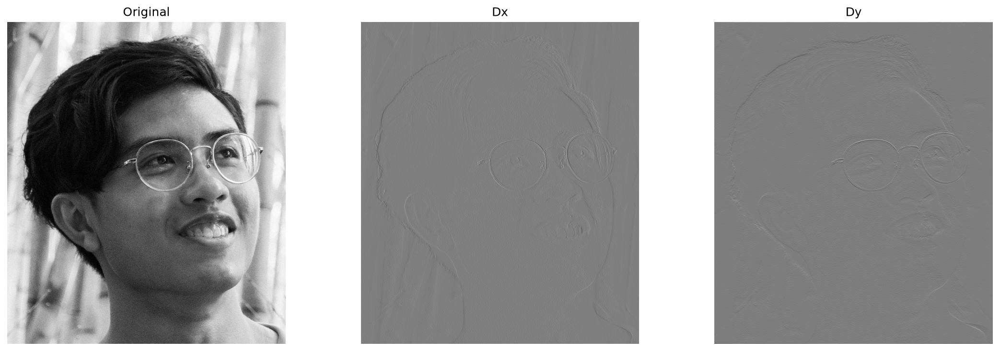
I computed the derivative responses as $I_x = I * D_x$ and $I_y = I * D_y$. The derivatives are signed, so their sign indicates whether intensity is increasing or decreasing in a given direction.
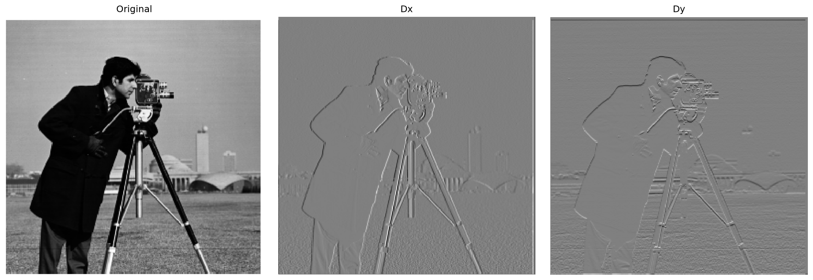
The gradient magnitude is $\|\nabla I\| = \sqrt{I_x^2 + I_y^2}$. Large gradient magnitudes correspond to strong intensity changes and likely edges. The raw magnitude also responds to weak texture and noise, especially in textured regions such as grass.
I experimentally tested thresholds between 0.05 and 0.40. At lower thresholds, many true edges remained, but substantial weak texture and noise was also classified as edges. At higher thresholds, noise decreased, but legitimate weaker object boundaries disappeared. I selected $t = 0.20$ as a qualitative compromise that preserved the major boundaries while suppressing much of the grass noise.
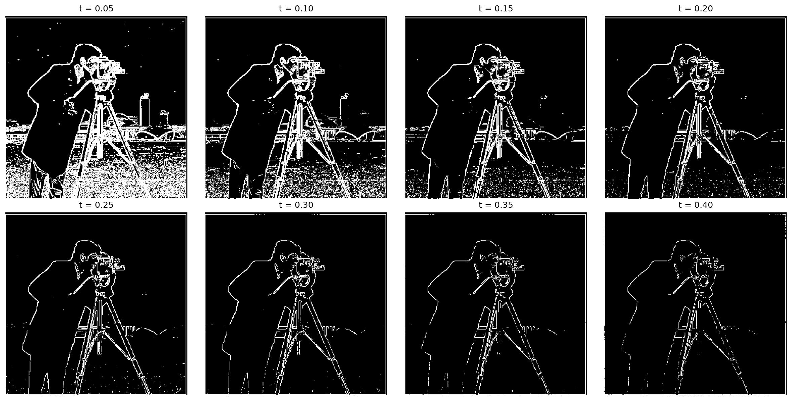
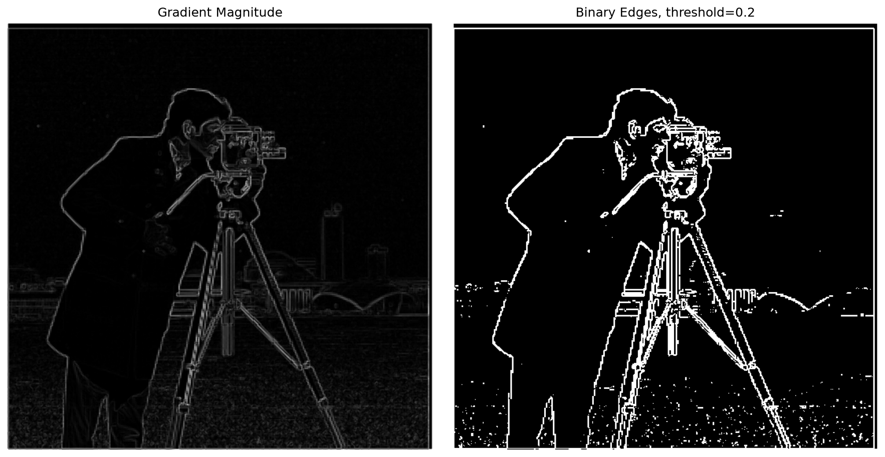
Differentiation responds strongly to pixel-scale variation, which makes finite-difference results noisy. Gaussian filtering suppresses high-frequency noise before differentiation, so I smoothed the image before computing directional derivatives.
I constructed a 1D Gaussian with cv2.getGaussianKernel() and formed the 2D Gaussian by the outer product $G_{2D} = g g^T$. A Gaussian has theoretically infinite support, so I truncated it at approximately $\pm 3\sigma$. In practice, I used $\text{radius} = \lceil 3\sigma \rceil$ and $\text{size} = 2\,\text{radius} + 1$. Examples: $\sigma = 0.5 \rightarrow 5\times5$, $\sigma = 1 \rightarrow 7\times7$, $\sigma = 2 \rightarrow 13\times13$, and $\sigma = 4 \rightarrow 25\times25$.
I compared Gaussian scales of $\sigma = 0.5, 1, 2, 4$. At $\sigma = 0.5$, relatively little noise was removed, larger values removed more fine variation, but very large sigma values such as 4 broadened meaningful edges excessively. I selected $\sigma = 1$, which produced a 7×7 kernel and balanced noise removal with edge preservation.
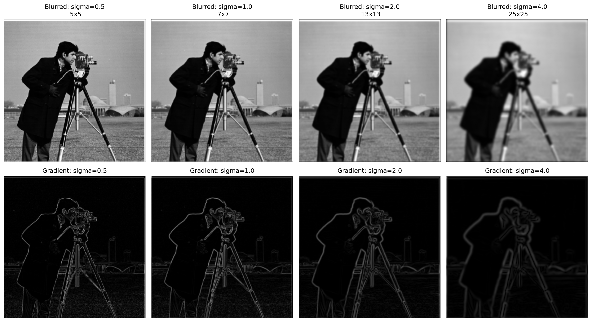
I smoothed the image first: $I_G = G * I$, then computed $I_{xG} = I_G * D_x$ and $I_{yG} = I_G * D_y$. The gradient magnitude is $\|\nabla I_G\| = \sqrt{I_{xG}^2 + I_{yG}^2}$. Compared with the raw finite-difference response, the smoothed version produced cleaner and more coherent edges, while suppressing much of the small noisy texture. Edges became slightly broader because the Gaussian spread transitions over a local region.
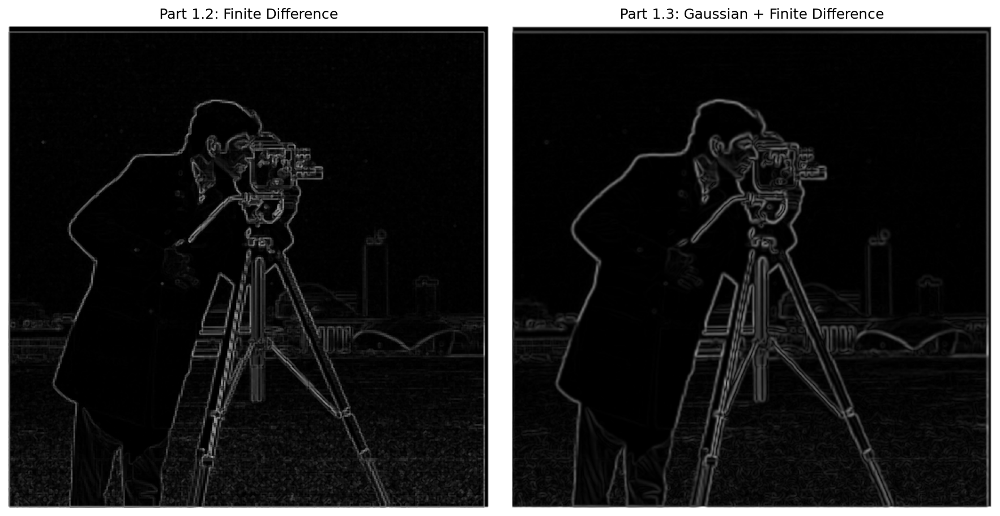
I did not reuse $t = 0.20$. Gaussian smoothing changes the gradient-value distribution, so I chose a new threshold. I excluded a four-pixel border because the Gaussian radius is 3 pixels and the derivative adds another pixel affected by zero-padding behavior. I inspected positive interior gradient values and selected the 90th percentile, yielding a threshold of approximately $t = 0.1027$.
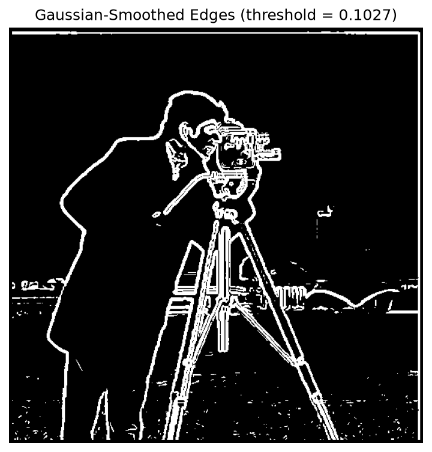
Because convolution is associative, $(G * I) * D_x = I * (G * D_x)$. In other words, I precomputed $DoG_x = G * D_x$ and $DoG_y = G * D_y$, then convolved the original image directly with those filters. This gives the same result as smoothing first and then differentiating, but in a single combined filtering step.
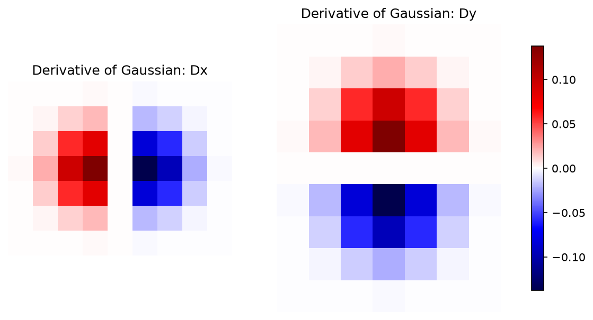
I compared the two-stage pipeline, Gaussian blur followed by finite difference, against the single DoG convolution. The recorded maximum numerical differences were approximately $D_x = 7.01 \times 10^{-16}$, $D_y = 7.82 \times 10^{-16}$, and gradient magnitude $= 8.05 \times 10^{-16}$. np.allclose() returned True, which confirms that the differences are only floating-point rounding.
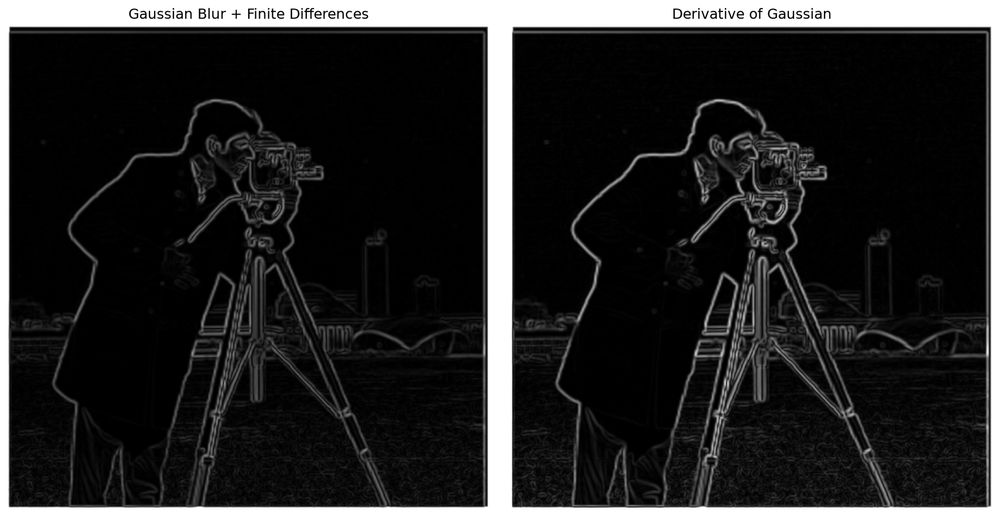
Unsharp masking uses a blurred version of the image as a low-pass approximation. The high-frequency detail is $I_{high} = I - I_{low}$, and the sharpened image is $I_{sharp} = I + \alpha I_{high}$. This can be written as $I_{sharp} = I + \alpha(I - G_{\sigma} * I)$, or equivalently $I_{sharp} = (1 + \alpha)I - \alpha(G_{\sigma} * I)$. The equivalent single filter is $K_{unsharp} = (1 + \alpha)\delta - \alpha G_{\sigma}$, where $\delta$ is the impulse filter.
In my first experiments, zero-filled boundaries caused artificial dark values around the border, especially for larger Gaussian kernels. I later switched to symmetric boundary handling for the sharpening experiments, which produced more natural results. This did not require an extra figure.
I tested Gaussian scales of $\sigma = 0.5, 1, 2, 4$ and selected $\sigma = 1$ with a 7×7 kernel. This gave enough smoothing to isolate meaningful architectural detail without making the high-frequency band too broad. The high-frequency image is $I_{high} = I - I_{blurred}$, and for display only I added $+0.5$ to visualize signed differences around middle gray, this shift is not part of the sharpening computation.
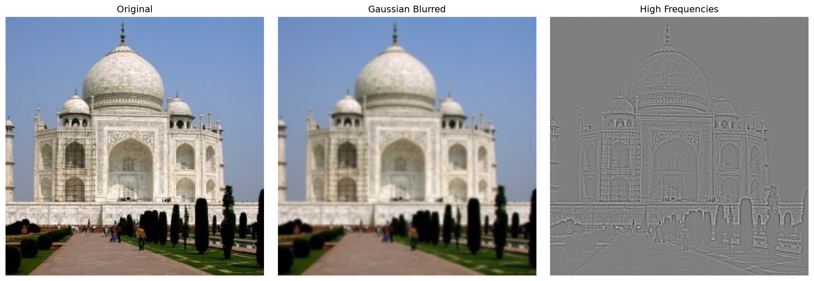
I tested $\alpha = 0.5, 1.0, 1.5, 2.0$. Increasing $\alpha$ strengthens edges and texture, but overly large values become harsh and exaggerate artifacts. I selected $\alpha = 1.0$ as the best compromise between stronger detail and natural appearance.
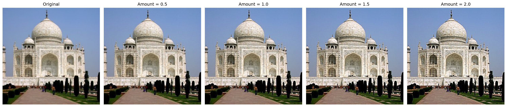
I compared the explicit pipeline of blur, subtract, and add with the single convolution unsharp-mask kernel. The maximum unclipped numerical difference was $1.1920929 \times 10^{-7}$, which is consistent with float32 precision and confirms the formulations are equivalent.
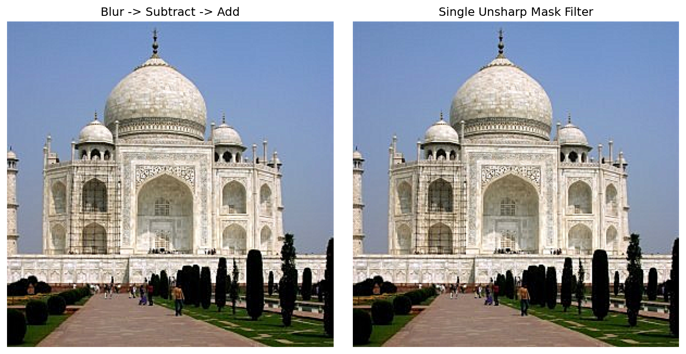
This is my custom photograph. I resized the original 3072×3072 image to 1024×1024 using cv.INTER_AREA for downsampling. I tested Gaussian scales of 0.5, 1, 2, and 4 and selected $\sigma = 1$. I then tested $\alpha = 0.5, 1.0, 1.5, 2.0$ and selected $\alpha = 1.0$.
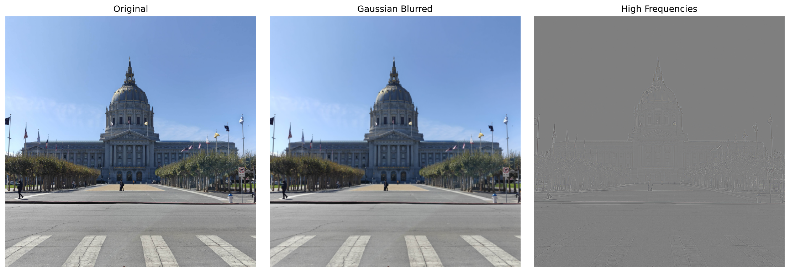
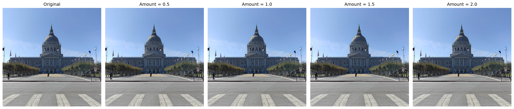
This is a separate evaluation from normal sharpening. I started from the sharp City Hall photograph, intentionally blurred it with $\sigma = 2$, and then sharpened the blurred image with $\alpha = 1$. The result was crisper than the blurred image, but it did not recover the original sharp photograph because the Gaussian blur removed and attenuated high-frequency information. Unsharp masking can amplify whatever high-frequency structure remains, but it cannot reconstruct information that was actually destroyed.
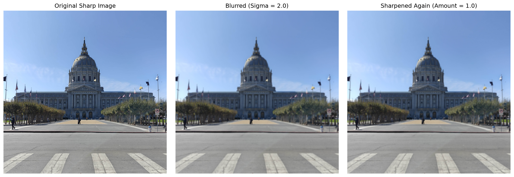
For a hybrid image, I low-pass one image and high-pass the other: $I_{low} = G_{\sigma_L} * I_L$ and $I_{high} = I_H - G_{\sigma_H} * I_H$. The hybrid is then $I_{hybrid} = I_{low} + I_{high}$. High-frequency structure tends to dominate when the image is viewed nearby or enlarged, while low-frequency structure becomes more dominant at greater distance or smaller display sizes. I created three hybrids: Derek + Nutmeg, Friend 1 + Dog, and Friend 2 + Panda.
Before combining frequency bands, I aligned the corresponding image structures as closely as possible. For face/animal hybrids, I selected the left eye and right eye in both images and used them to estimate a similarity transform: midpoint for translation, eye-to-eye distance for scale, and eye-line angle for rotation. The moving image was then scaled, rotated, and translated to align with the reference. A 50/50 overlay was used as a visual check, and I did not include raw coordinate-debugging output in the final report.
For the detailed Derek + Nutmeg example, Nutmeg contributed the low-pass component and Derek the high-pass component. Near or large viewing conditions made Derek's high-frequency structure more apparent, while the reduced image emphasized Nutmeg's low-frequency structure.
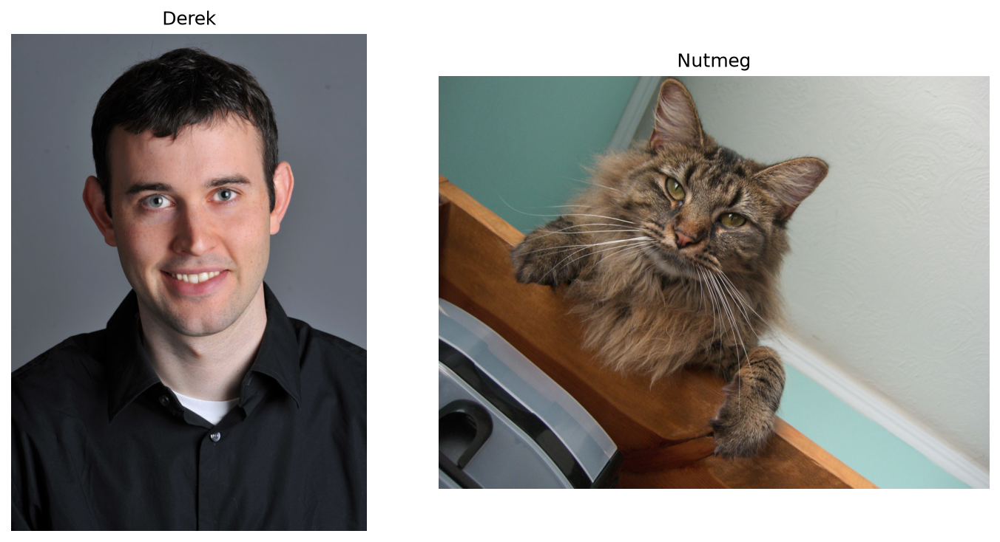
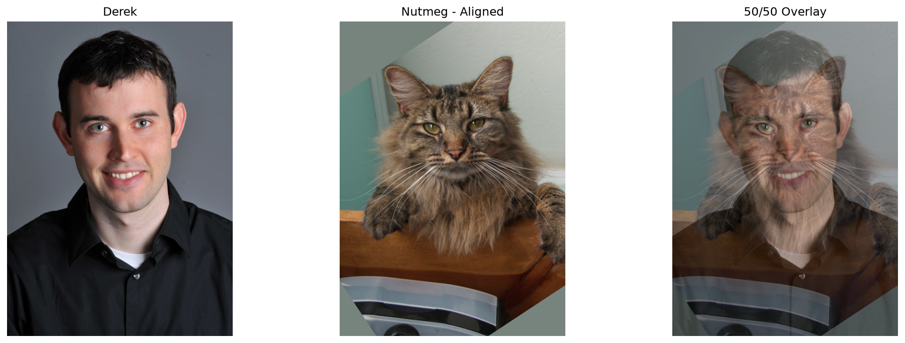
I first explored a broad range of cutoffs: $\sigma = 2, 4, 8, 16$. Smaller low-pass sigmas left too much fur detail, while very large sigmas removed too much facial structure. The high-pass sigma changed the scale of Derek's structures that remained in the residual.
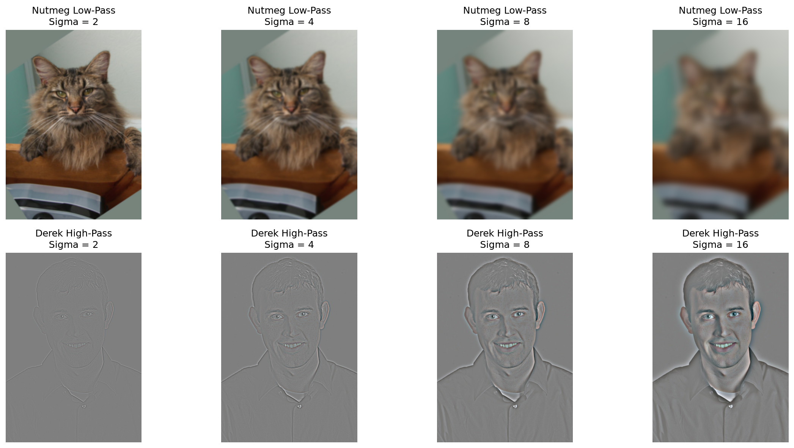
I refined the cutoff search around the promising ranges and tested low-pass sigmas $4, 5, 6$ and high-pass sigmas $1, 1.5, 2$.
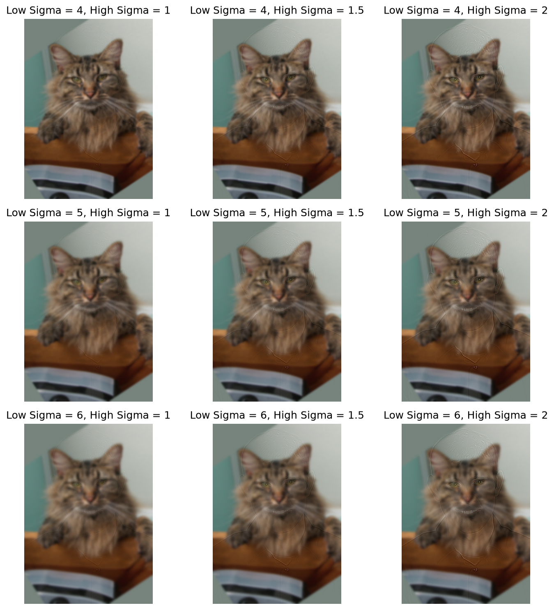
The final selected values were Nutmeg low-pass Sigma = 4 and Derek high-pass Sigma = 2. These cutoffs were chosen experimentally rather than arbitrarily.
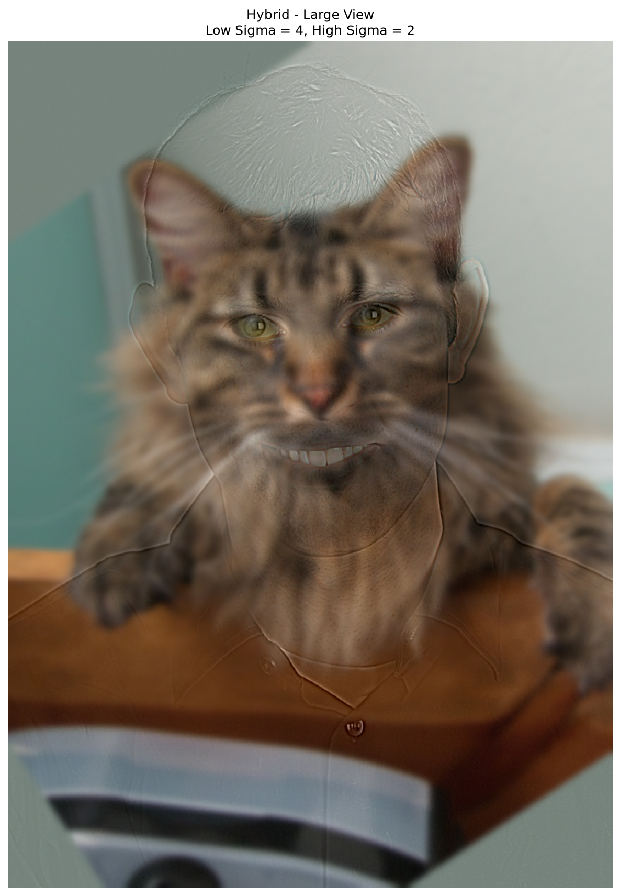
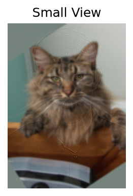
Final Derek + Nutmeg hybrid. At large scale, Derek's high-frequency structure is more visible. In the reduced image, these fine details are suppressed by viewing scale and Nutmeg's low-frequency structure becomes more dominant.
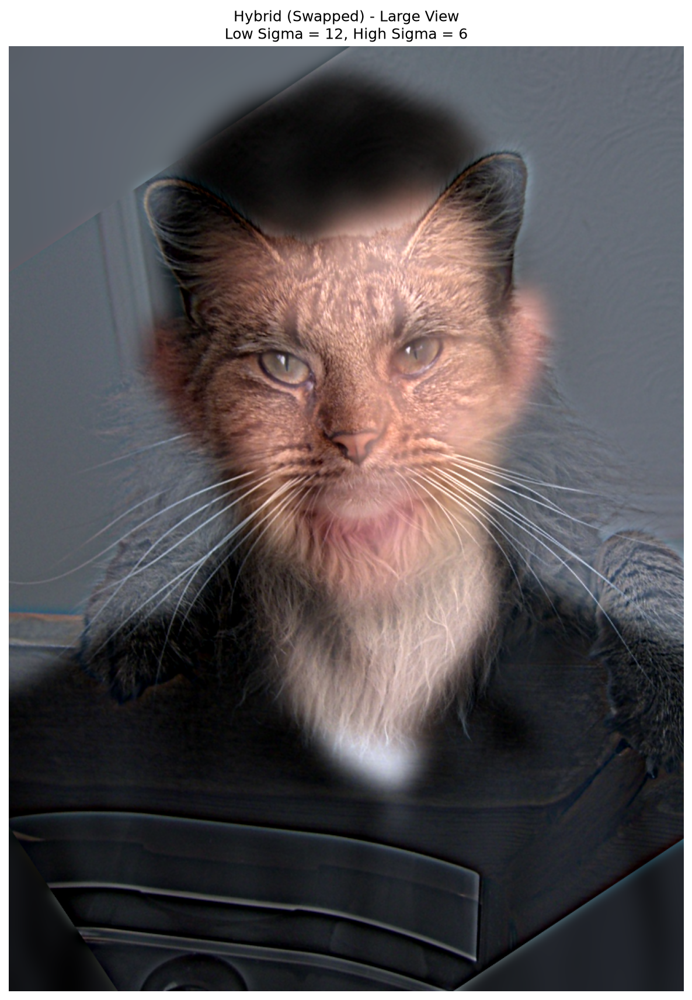
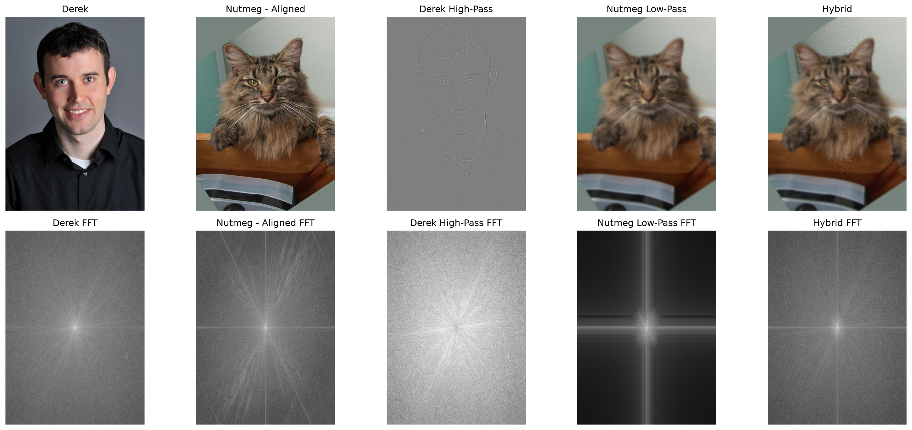
Each Fourier magnitude panel is displayed with its own plotting range, so relative brightness between separate panels should be interpreted qualitatively rather than as an absolute comparison of spectral energy.
I also tested reversing the frequency roles, but the selected Nutmeg-low / Derek-high configuration produced a clearer viewing-distance transition, so I used it for the final analysis.
The portrait provides strong broad head and body structure, while the dog contributes distinctive fine-scale eyes, ears, muzzle, fur, mouth, and tongue. I used Friend 1 as the low-pass component and Dog as the high-pass component. The final values were Friend 1 Low Sigma = 6 and Dog High Sigma = 2.
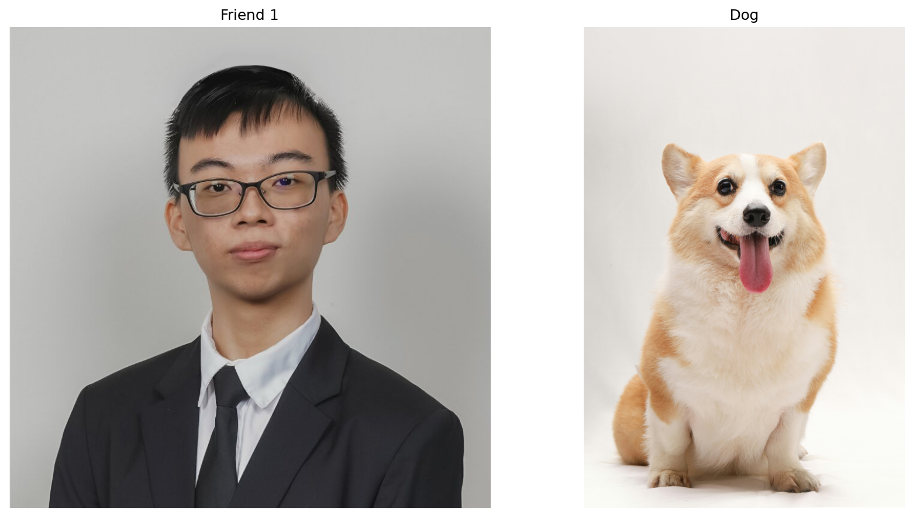
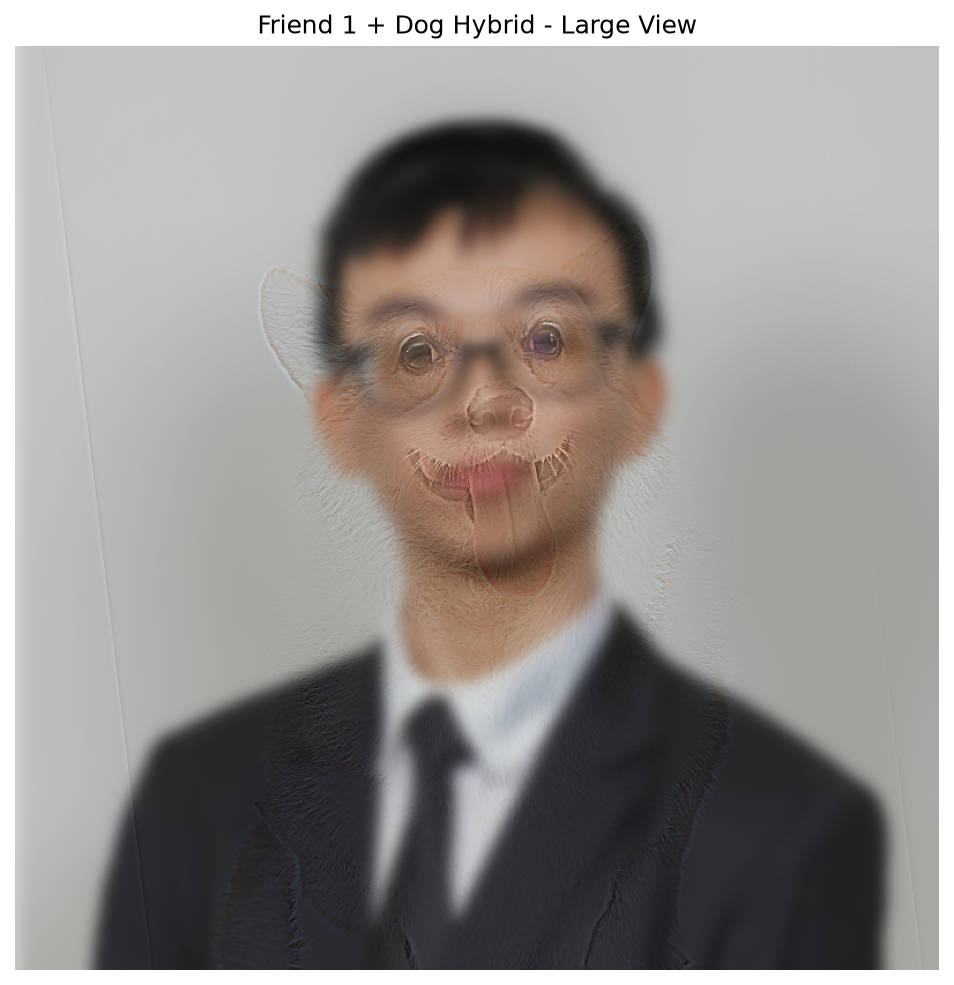
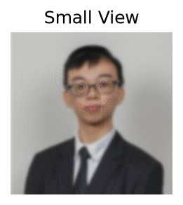
Friend 1 + Dog hybrid. Friend 1 supplies the low-frequency structure using Low Sigma = 6, while the dog supplies high-frequency detail using High Sigma = 2. The dog is more noticeable at close viewing scale, whereas the human portrait becomes clearer when the image is reduced.
This pair required stronger smoothing. Friend 2 retained more facial detail than the first custom pair, so I increased the low-pass smoothing enough for the panda's high-frequency features to stand out. The final values were Friend 2 Low Sigma = 10 and Panda High Sigma = 4.
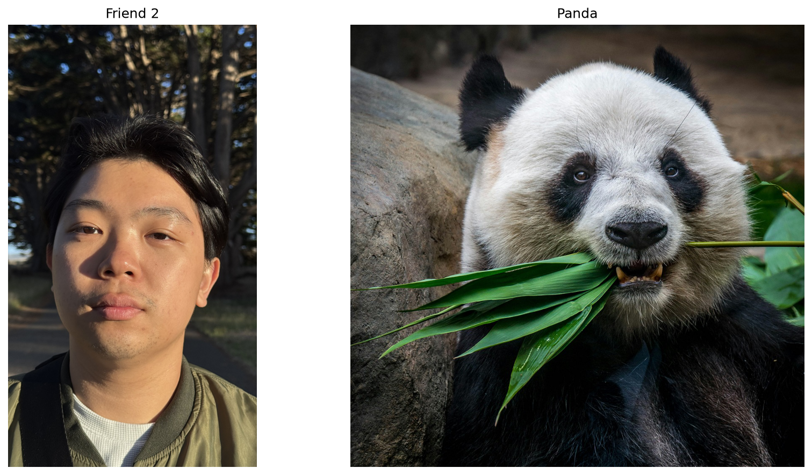
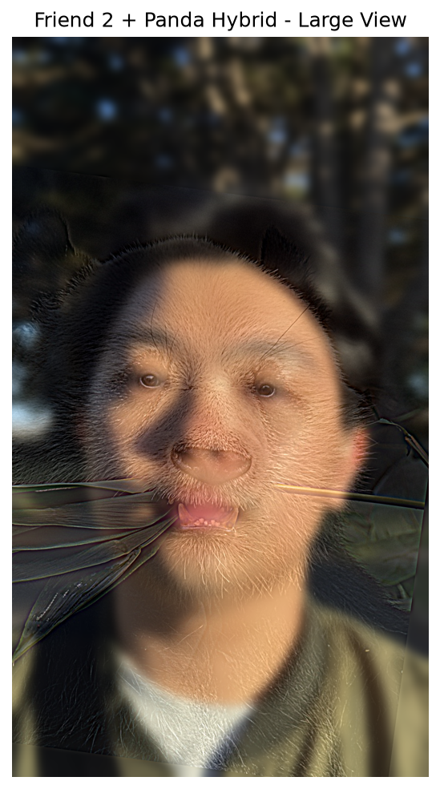
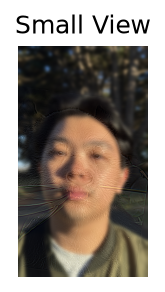
Friend 2 + Panda hybrid. With Friend 2 low-pass filtered at Low Sigma = 10 and the panda high-pass filtered at High Sigma = 4, the panda is prominent at close viewing scale while the human portrait becomes more dominant in the reduced image.
A Gaussian and Laplacian stack are not pyramids because there is no downsampling. Every level retains the same dimensions as the original image. I used five levels for the apple and orange images, with the Sigma sequence 1, 2, 4, 8 after the original.
For the Gaussian stack, I defined $G_0 = I$, $G_1 = G_{\sigma=1} * I$, $G_2 = G_{\sigma=2} * I$, $G_3 = G_{\sigma=4} * I$, and $G_4 = G_{\sigma=8} * I$. Every image remained 300×300. Increasing Sigma removed progressively more fine texture, while the coarser images retained broad shape, shading, and color.
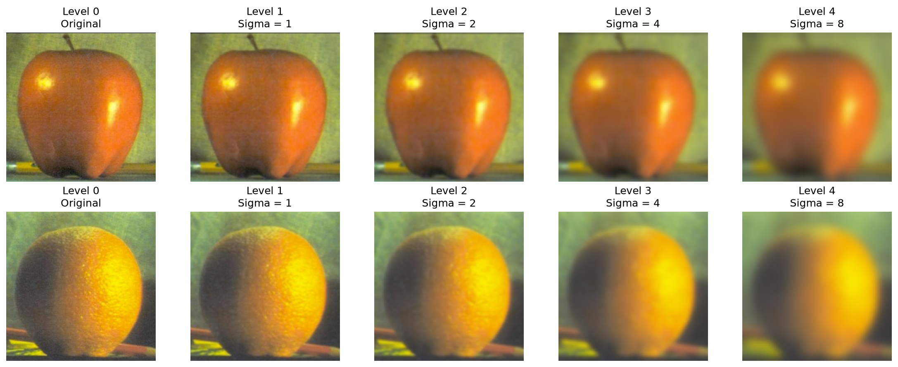
For the Laplacian stack, I used $L_i = G_i - G_{i+1}$ for all but the final level, with the final residual retained as $L_4 = G_4$. The earlier levels contain fine edges and texture, while later levels represent broader spatial structures. For visualization, signed Laplacian values are shifted by +0.5 so zero maps to middle gray, this is display-only and not part of the mathematical reconstruction.
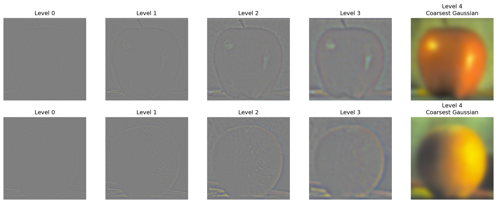
The stack satisfies the telescoping identity $(G_0 - G_1) + (G_1 - G_2) + (G_2 - G_3) + (G_3 - G_4) + G_4 = G_0$. Summing the Laplacian stack reconstructs the original image. Recorded maximum reconstruction errors were approximately Apple: $2.24 \times 10^{-8}$ and Orange: $1.49 \times 10^{-8}$, which are tiny floating-point errors.
Multiresolution blending does not make a single abrupt transition between two images. Instead, image content is decomposed into Laplacian frequency bands, and a Gaussian stack of the mask controls how the transition spreads at each scale. Fine/high-frequency detail blends over relatively narrow regions, while broad/low-frequency structure transitions across wider spatial regions. The blended Laplacian levels are then summed to reconstruct the final result.
For the apple + orange blend, I used a vertical step mask $M(x,y)=1$ for $x 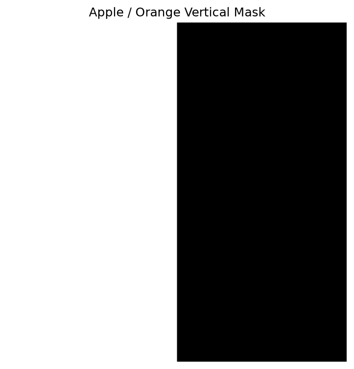 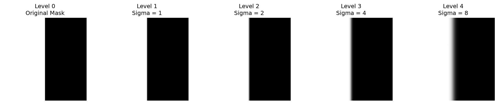 At each Laplacian level, $B_i = M_i L_{apple,i} + (1 - M_i) L_{orange,i}$ and the final blend is $B = \sum_i B_i$. 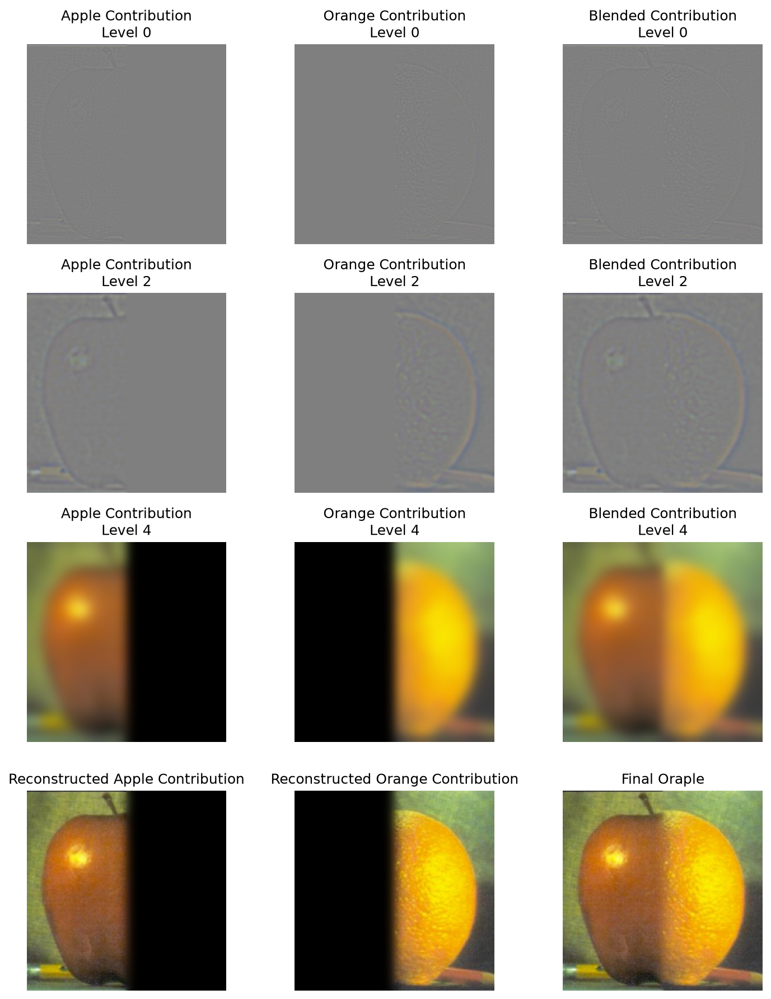 A direct half-and-half composite has an abrupt vertical discontinuity because every frequency changes at exactly the same position. The multiresolution version softens the transition: low-frequency color and shading spread over a wider region, while high-frequency texture changes much more locally. 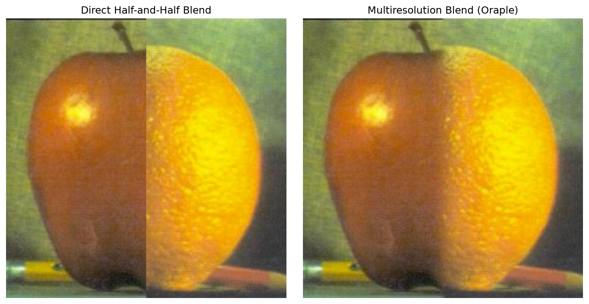 I blended photographs of a yellow flower and a pink flower. I tested vertical and horizontal seams and selected the vertical seam because it created a cleaner half-yellow/half-pink blossom while preserving the flower structure. The background did not have to align perfectly because the important correspondence was the foreground blossom. 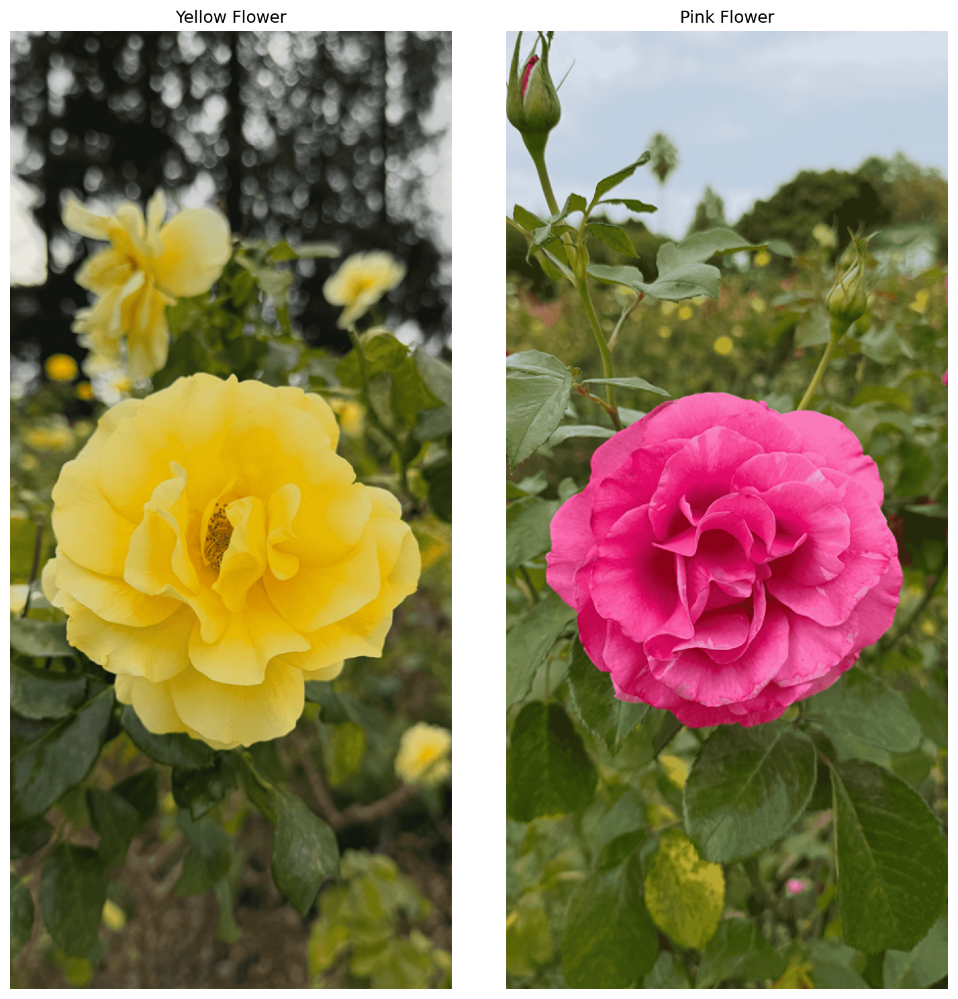 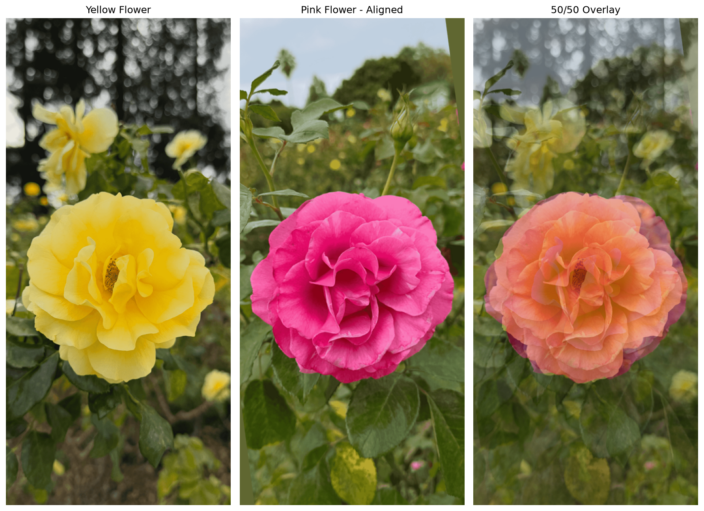 The final settings used 5 levels and a base sigma of 4. The blend was computed as $B_i = M_i L_{yellow,i} + (1 - M_i)L_{pink,i}$. 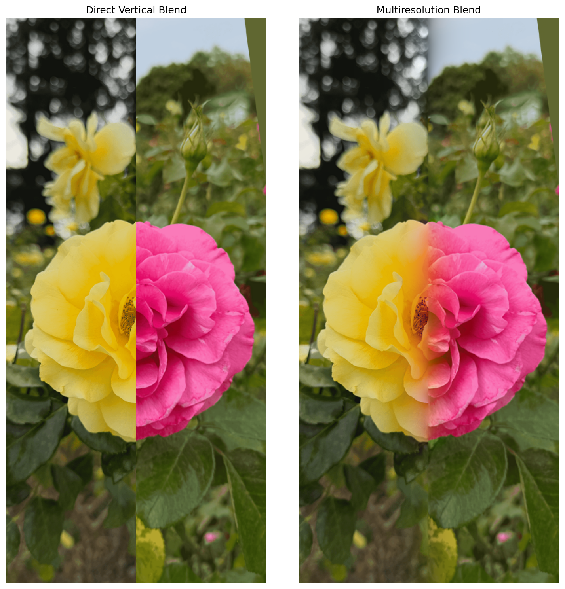 Because the source photographs had different backgrounds, illumination, and scene geometry, multiresolution blending could not make the entire background perfectly consistent. The method worked best around the aligned central flower, where corresponding structure existed in both images. This is the required irregular-mask example. I replaced the visible shirt region in a portrait with a selected region from a sunset photograph. The mask was created by manually clicking points around the visible shirt boundary and filling the polygon, so it was not a straight-line mask. 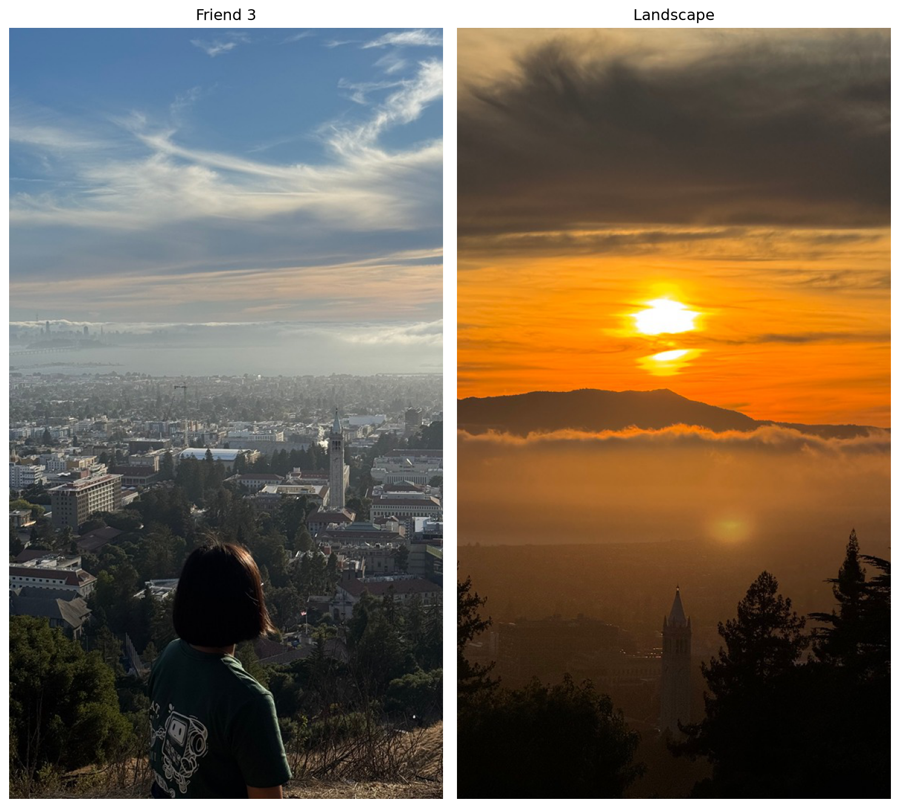 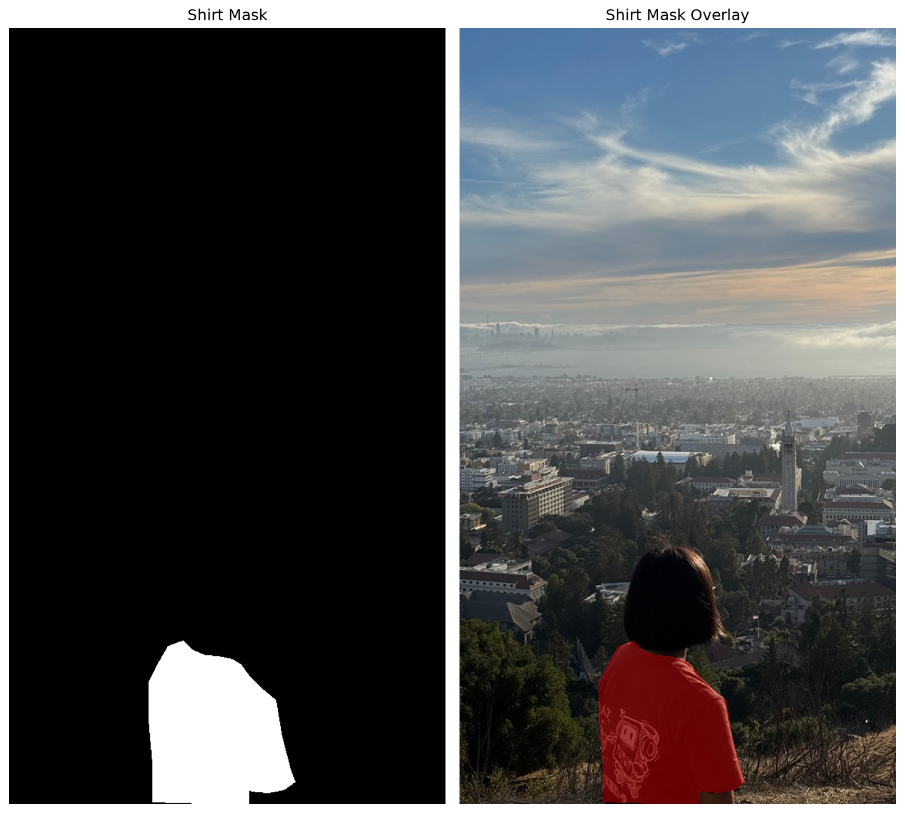 I selected a sunset crop containing the sun, orange sky, and mountain silhouette, then determined the shirt-mask bounding box and resized the crop while preserving aspect ratio. I placed the fitted sunset region over the shirt's location on a full-size canvas matching the portrait dimensions. 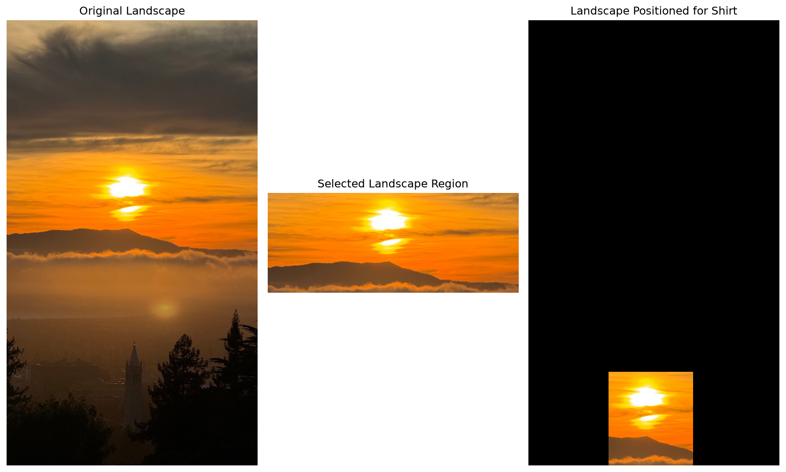 A direct binary preview was used to verify the composition before multiresolution blending: 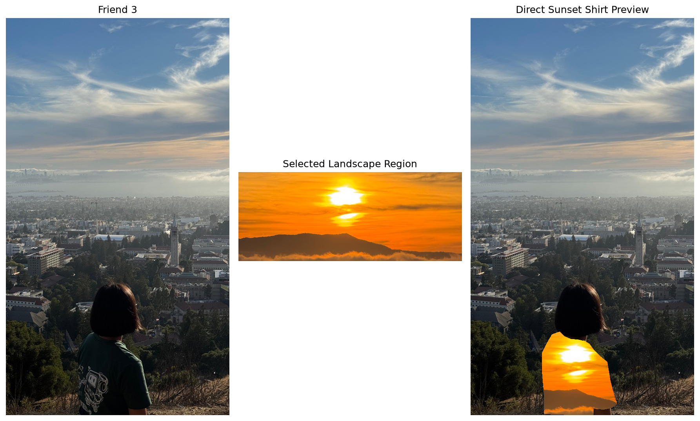 The final multiresolution settings used 5 levels and a base sigma of 3. I constructed Gaussian/Laplacian stacks for the portrait and the positioned sunset, plus a Gaussian stack for the mask. At each level, $B_i = (1 - M_i)L_{portrait,i} + M_iL_{sunset,i}$, and the final result was $B = \sum_i B_i$. 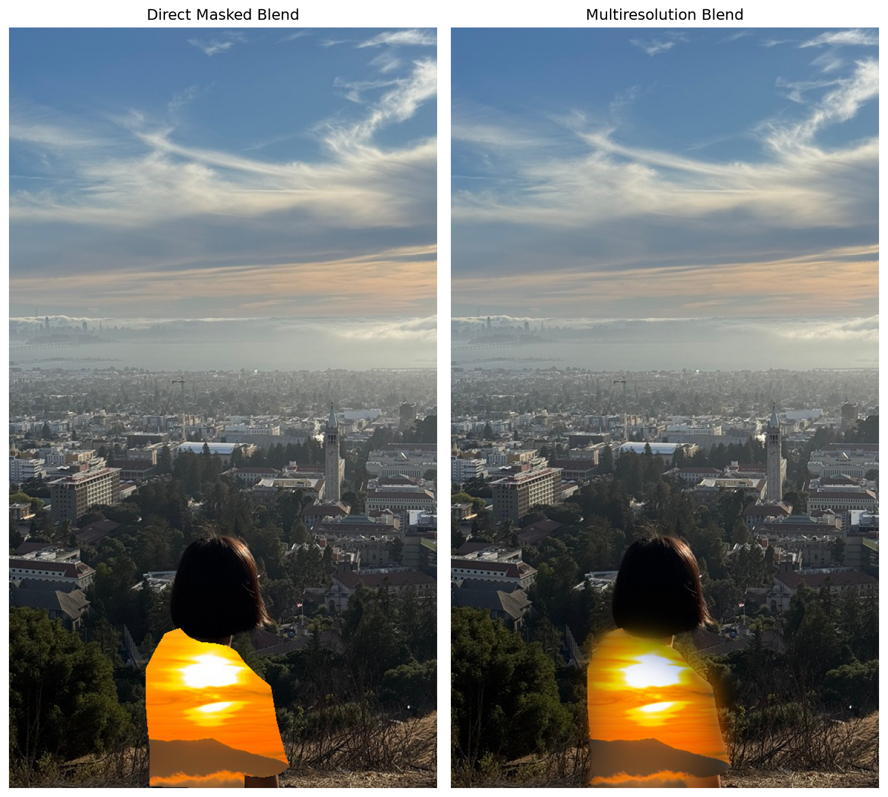 The multiresolution result visibly softens the hard polygonal edge of the direct composite. Some bright color bleeding remains around the clothing boundary, particularly near the shoulders and neckline. The sunset is much brighter and warmer than the original dark shirt, and the Gaussian mask intentionally spreads low-frequency content across the boundary. This demonstrates a tradeoff: a wider blend produces a smoother seam, but strongly mismatched colors or brightness can create a visible halo.Custom Blend 1: Yellow + Pink Flower
Custom Blend 2: Sunset Shirt
The most important thing I learned from this project is how strongly image appearance depends on spatial frequency and scale. At first, edge detection, sharpening, hybrid images, and multiresolution blending seemed like separate techniques. After working through the project, I realized that they are closely connected by the same frequency-based interpretation of images.
High frequencies encode rapid spatial changes such as edges, fine texture, fur, and small architectural details, while low frequencies encode broad shape, illumination, and large-scale structure. Edge detection isolates high-frequency changes, unsharp masking increases them, hybrid images deliberately combine different frequency ranges from different images, and multiresolution blending decides how images should transition separately at each frequency scale.
I also learned that implementing the mathematical operation correctly is only part of producing a good result. Parameter selection, image alignment, boundary handling, mask design, and source-image compatibility all have a major effect on the final perceptual result. The experiments with thresholds, Gaussian Sigmas, hybrid cutoffs, and direct-versus-multiresolution blends made this especially clear.